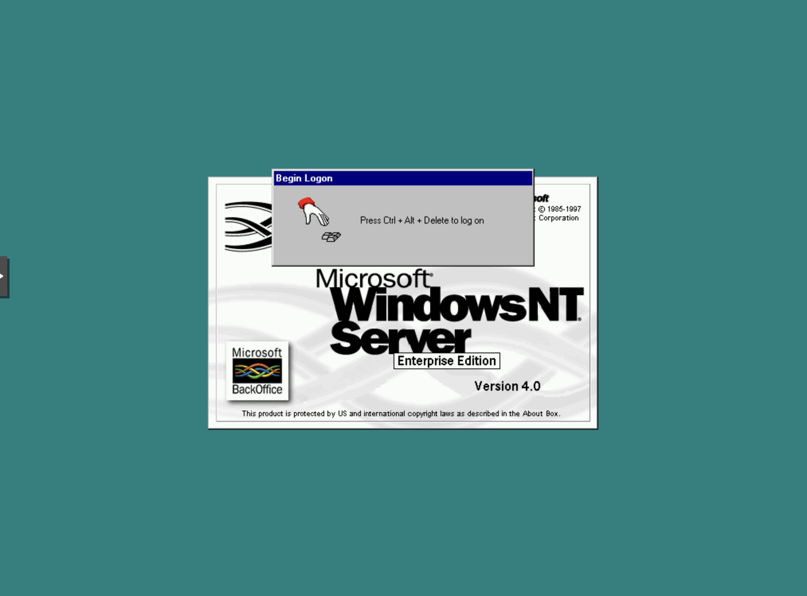
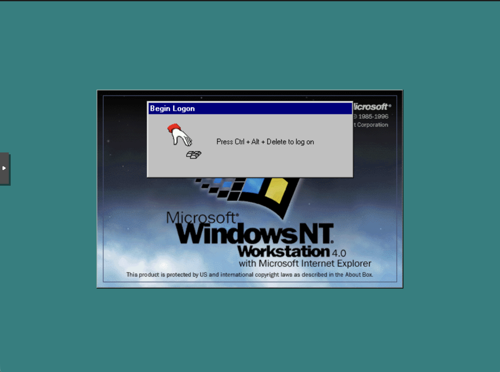

Laboratório retro
Um conjunto de máquinas virtuais no Proxmox permite testar sistemas operativos históricos, incluindo Windows NT 4.0, sem depender de computadores antigos. É possível experimentar instalações, controladores e configurações de rede e, quando necessário, recomeçar facilmente com outra VM.


Estes sistemas encontram-se obsoletos e são utilizados apenas para aprendizagem e testes em ambiente isolado, sem exposição à Internet.
Outras experiências
Arranque pela rede
Experiências com PXE e organização de imagens ISO, para instalar e recuperar sistemas operativos em laboratório.

Eletrónica e UPS
Projetos de diagnóstico, recuperação de equipamentos e ensaios de monitorização de alimentação de emergência, incluindo integração de UPS com serviços de rede.